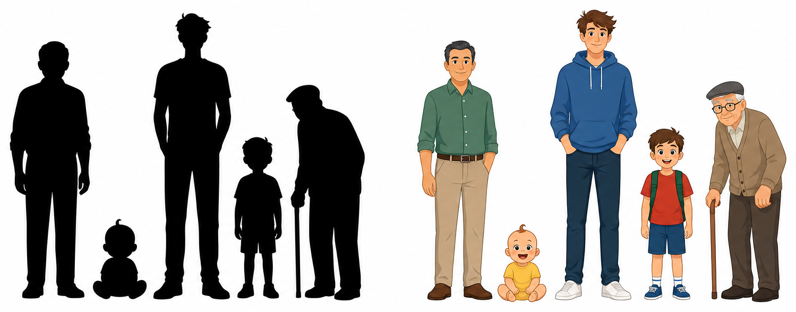

이 아파트, 얼마에 분양해야 할까?
평균에서 다중회귀까지 — 숫자 하나를 정하는 데 필요한 것들
강남구에 새 아파트를 짓는다
- 여러분은 시행사의 사업기획 담당자다.
- 이 부지에 아파트를 짓는다. 분양가를 정해야 한다.
- 너무 높으면 미분양, 너무 낮으면 손실. 정답에 가까운 숫자가 필요하다.

관측 데이터
강남구 최근 1년 실거래 · 평당가(만원) · 24개 단지
관측값이 1차원일 때
사용 가능한 모델은?
이 점들을 하나의 숫자로 요약한다면?
딱 하나의 숫자를 제시해야 한다면 무슨 값을 쓰겠는가. 그리고 왜 그 값인가?
진행 포인트 — 반드시 "왜"를 물을 것. 대부분 평균이라 답하지만 근거를 대지 못한다. 그 공백이 이 강의의 출발점.
평균
모든 관측치에 같은 하나의 값을 예측하는 수평선.
평균은 우리가 가격 정보 외에 아무것도 모를 때 쓸 수 있는 가장 좋은 데이터 분석 모델이다.
왜 하필 평균인가?
중앙값도 최빈값도 있는데, 왜 평균을 '가장 좋은' 모델이라고 하나. '좋다'는 걸 어떻게 판정할 건가?
진행 포인트 — 답이 나오지 않는다. 판정 기준이 없기 때문이다. "이 질문에 처음 답한 사람이 있다"로 넘어간다.
후보는 셋이다
무엇이 더 좋은지 말하려면, 먼저 '좋다'를 재는 자가 필요하다.

카를 프리드리히 가우스
정수론 · 천문학 · 측지학 · 통계
관측 오차를 다루는 문제에서 최소제곱을 정립했다.
사라진 천체를 다시 찾다
- 1801년 1월, 이탈리아의 피아치가 새로운 천체 세레스(Ceres)를 발견한다.
- 40여 일간 관측되다가 태양 뒤로 들어가면서 사라진다.
- 다시 나타날 위치를 계산해야 하는데, 확보된 관측값은 몇 개뿐이고 하나하나가 미세하게 다르다.
- 24세의 가우스가 계산한 위치에서 세레스는 실제로 재발견된다.
관측값이 매번 다를 때, 무엇을 참값의 대표로 삼을 것인가?
메모 — 최소제곱을 학술지에 먼저 발표한 사람은 르장드르(1805). 정규분포·오차이론과 연결해 "왜 최선인가"를 논증한 것은 가우스(1809).
오차를 재보자
각 점에서 후보 모델값까지의 세로 거리. 위쪽은 (+), 아래쪽은 (−).
문제 — 더하면 0이 된다
- +와 −가 상쇄된다.
- 오차가 아무리 커도 합은 0에 가까울 수 있다.
- 평가 기준이 될 수 없다.
그럼 어떻게 하면 될까?
가우스의 선택 — 제곱
- 1부호가 사라진다
- 2큰 오차에 더 큰 벌점 — 크게 틀리는 것을 더 심각하게 본다
- 3미분 가능 → 최솟값을 해석적으로 구할 수 있다
절댓값은 꺾인 점에서 미분이 불가능하다. 3번이 결정적이다.
최소제곱이 지목한 답
평균은 관습이 아니라, 제곱오차 기준에서 유일하게 최적인 해다.
TSS — 총제곱합
Total Sum of Squares · 편차제곱합, SST로도 표기. n−1로 나누면 분산.
정보가 하나도 없을 때 감수해야 하는 오류의 총량. 우리의 바닥(baseline)이다.
TSS를 줄이려면 무엇이 필요한가?
모델을 더 복잡하게 만들면 되는가? 아니면 다른 게 필요한가?
진행 포인트 — 학생들이 스스로 변수를 제안하게 한다. 이 리스트를 칠판에 남겨두고 S31에서 다시 꺼낸다.
정보를 하나 주면 — 단순회귀
프랜시스 골턴
다윈의 사촌
유전 형질이 세대 간에 어떻게 전달되는지를 숫자로 보려 했다.
평범함으로의 회귀
- 1870년대 스위트피 완두콩 씨앗 크기 실험에서 시작해 사람 키 데이터로 확장했다.
- 부모가 아주 크면 자식은 부모보다 작은 쪽으로, 아주 작으면 큰 쪽으로 간다.
- 자식의 키가 집단 평균 쪽으로 당겨진다.
여기서 '회귀(regression)'라는 이름이 나왔다. 오늘날의 "y를 x로 예측하는 기법"이라는 뜻은 나중에 붙은 것이다.
메모 — 유전의 법칙이 아니다. 두 변수의 상관이 완전하지 않으면(|r| < 1) 수학적으로 반드시 나타나는 통계적 현상이다.
칼 피어슨 — 관계를 숫자로
- 골턴의 관찰을 상관계수 r로 공식화 (1896)
- 회귀직선의 계수를 데이터에서 계산하는 절차를 정립
왜 y = ax + b 인가?
- 평균 모델은 x가 무엇이든 같은 값을 낸다 → 기울기 0
- x의 정보를 쓰려면, x가 변할 때 예측값도 변해야 한다
- 가장 단순한 변화 방식 = 일정 비율로 변한다
- a는 "x가 1 늘 때 y가 얼마나 변하는가"
직선은 가정이 아니라 가장 적은 가정이다.
평균 모델과 회귀 모델은 완전히 다른 모델인가?
회귀 모델에서 기울기가 0이면 무엇이 되는가?
유도할 답 — 평균 모델은 회귀 모델의 특수한 경우(a=0). 이 관계는 한 학기 내내 반복된다: 복잡한 모델은 단순한 모델을 포함한다.
같은 원리, 다른 대상
가우스가 상수에 대해 했던 일을 직선에 대해 똑같이 한다.
달라진 것은 후보 모델의 집합뿐이다. 판정 기준은 그대로 제곱오차.
정보가 사람을 드러낸다

RSS — 잔차제곱합
이 모델은 얼마나 좋아진 건가?
4,820에서 1,930으로 줄었다. 차이(2,890)를 쓸까, 비율을 쓸까. 왜?
유도할 답 — 차이는 단위와 데이터 규모에 종속된다. 비율이어야 다른 문제끼리 비교가 된다.

로널드 피셔 — 오류를 쪼개다
- 분산분석(ANOVA)을 정립 — 전체 변동을 "설명된 부분"과 "남은 부분"으로 분해
- 실험계획법, 유의성 검정, p값의 실용화
메모 — 피셔가 세운 것은 분산분해와 검정의 틀이다. "결정계수"라는 용어는 시월 라이트(1921)가 붙였다.
R² — 결정계수
- 정보 없이 만든 모델의 오류 중, 이 모델이 없애준 비중
- R² = 0 → 평균 모델과 똑같다. 정보가 아무 도움이 안 됐다
- R² = 1 → 오류가 0. 완벽히 설명
- 모든 모델은 "정보 없는 모델(평균)"과 비교당한다. R²는 그 비교의 점수판이다.
R²가 음수가 될 수 있을까?
음수가 나오려면 어떤 상황이어야 하나. 그런 일이 실제로 있을까?
정답 — RSS > TSS, 즉 모델이 평균보다 못 맞출 때. 학습 데이터에 절편 있는 OLS는 음수 불가. 학습에 쓰지 않은 데이터에서는 얼마든지 발생한다.
아파트 문제로 복귀
x축을 전용면적으로 바꾸고 회귀선을 그었다.
면적 하나를 알았을 뿐인데 분양가 예측이 이만큼 나아졌다.
정보를 더 주면 — 다중회귀와 그 함정
하나로 60%를 설명했다면, 열 개를 넣으면?
변수를 늘리면 R²는?
- 변수를 추가하면 RSS는 절대 늘어나지 않는다
- → R²는 절대 줄어들지 않는다
- 심지어 난수 변수를 넣어도 R²는 조금씩 올라간다
통계학자들은 처음에 이걸 보고 만족했다.
그럼 변수를 계속 넣으면 되는가?
무언가 이상하다면, 무엇이 이상한가?
학생들이 잘 내는 답 — 과적합, 해석 불가, 무의미한 변수.
변수 수에 벌점을 준다 — 수정 R²
수정 R²는 쓸모없는 변수를 넣으면 실제로 내려간다.
k는 변수 개수. 변수를 늘려 얻은 설명력이 자유도 손실보다 작으면 지표가 하락한다.
계수가 뒤집힌다
| 모델 | 면적 계수 | 층수 계수 | 역거리 계수 |
|---|---|---|---|
| 면적만 | +1,240 | — | — |
| + 층수 | +1,180 | +85 | — |
| + 역거리 | +1,205 | +71 | −340 |
| + 세대수 | −210 | +66 | −290 |
면적이 늘수록 가격이 떨어진다? 변수를 하나 넣고 뺄 때마다 기울기가 흔들린다.
이 계수를 믿어도 되는가
우리가 가진 데이터는 표본이다. 다른 표본을 뽑으면 계수는 다르게 나온다.
추정치가 0에서 표준오차 몇 개만큼 떨어져 있는가.
p값은 무엇의 확률인가?
p < 0.05를 보고 우리는 정확히 무슨 말을 할 수 있는가?
귀무가설이 참일 때, 관측된 것만큼 극단적인 결과가 나올 확률
p값은 "가설이 참일 확률"이 아니다. 가설이 참이라고 가정했을 때 데이터가 관측될 확률이다.
그래서 "계수가 0일 확률이 5%", "0이 아닐 확률이 95%"는 모두 틀린 진술이다. 조건이 뒤집혀 있다. 통계학에서 가장 널리 퍼진 오해이자 논문 심사에서 지적당하는 단골 항목이다.
변수 선택 — p값으로 가지치기
| 변수 | 계수 | p값 | 판정 |
|---|---|---|---|
| 전용면적 | +1,190 | 0.000 | 채택 |
| 층수 | +68 | 0.003 | 채택 |
| 세대수 | −12 | 0.412 | 제거 |
| 준공연도 | +4 | 0.688 | 제거 |
유의하지 않은 변수를 제거하고 다시 적합한다.
뺐더니 살아난다
| 전용면적 | +820 | 0.312 |
| 공급면적 | +410 | 0.287 |
| 층수 | +66 | 0.004 |
| 전용면적 | +1,190 | 0.000 |
| 층수 | +68 | 0.003 |
중요한 변수가 p값 때문에 잘려나갔다. 무슨 일이 벌어진 건가?
다중공선성
- 같은 방향의 정보를 담은 변수가 둘 이상 들어가면 공통 변동성을 나눠 갖는다
- 그 공통 부분이 "누구의 몫인가"를 데이터가 결정하지 못한다
- 표준오차 ↑ → t값 ↓ → p값 ↑
- 계수는 여전히 불편추정량이지만 불안정해진다
보통 5 또는 10 초과 시 경고. 아파트에서는 전용면적 / 공급면적 / 방 개수가 전형적 사례.
두 변수가 관측치마다 거의 같이 움직인다 — r = 0.95
대응 — Stepwise와 그 한계
변수들이 같은 정보를 공유한다면, 아예 서로 겹치지 않는 새 축을 만들면 어떨까? — PCA의 출발점
그래서 우리가 얻은 것
돌리면 이 화면이 나온다
| 변수 | B | 표준오차 | β | t | 유의확률 | VIF |
|---|---|---|---|---|---|---|
| (상수) | 2,140 | 210 | — | 10.19 | .000 | — |
| 전용면적 | 1,190 | 96 | .612 | 12.40 | .000 | 1.8 |
| 층수 | 68 | 22 | .154 | 3.09 | .002 | 1.2 |
| 역거리 | −340 | 88 | −.208 | −3.86 | .000 | 1.5 |
- R²정보 없는 모델(평균)의 오류 중 이 모델이 없애준 비중
- Bx가 1 늘 때 y가 얼마나 변하는가 — 단위가 그대로 붙는다
- β단위를 없앤 값. 변수끼리 영향력을 견줄 때 쓴다
- t추정치가 0에서 표준오차 몇 개만큼 떨어져 있는가 = B / 표준오차
- p귀무가설이 참일 때 이만큼 극단적인 결과가 나올 확률
- VIF다중공선성 경고등. 보통 5 또는 10을 넘으면 의심